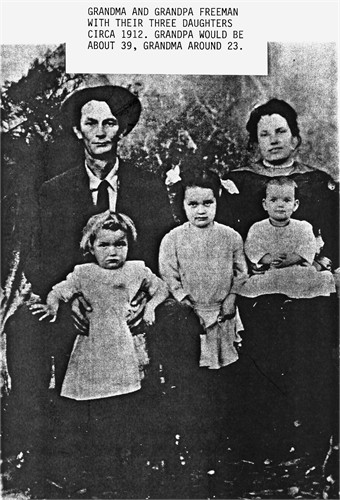

| 
Dona Elizabeth BAKER (1890-1970) |
Dona Elizabeth BAKER
DATE OF DEATH: According to her Social Security record, she died on August 15, 1970. According to the California Death Index, she died on August 13, 1970.
-- Social Security Death Index Dona married Joseph LeRoy FREEMAN, son of Lloyd Calhoun FREEMAN Sr. and Josephine Elizabeth HOWELL, on 24 Mar 1907 in Checotah, McIntosh County, Oklahoma. (Joseph LeRoy FREEMAN was born on 14 Dec 1873 in Pleasant Hill, Sabine Parish, Louisana, died on 29 Oct 1956 in Bakersfield, Kern County, California and was buried in Rose Hills Memorial Park, Whittier, Los Angeles County, CA.) |
 General Notes:
General Notes: